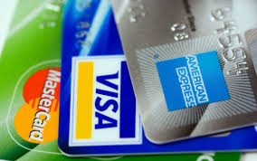
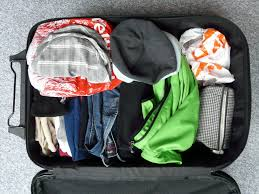
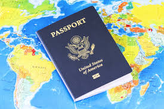
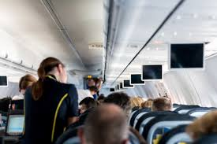
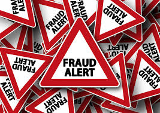
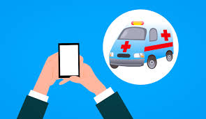
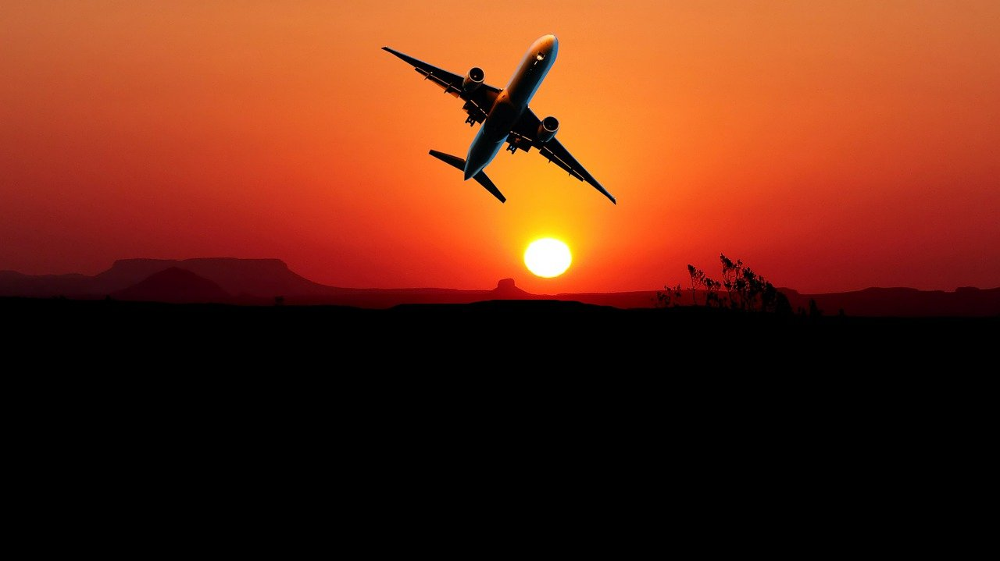
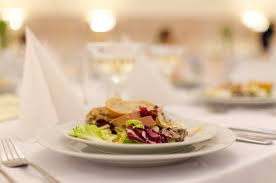
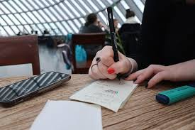
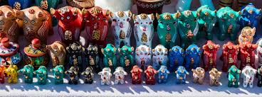

Recuerda habilitar tu tarjeta de crédito para que puedas utilizarla en el extranjero y siempre tengas acceso a dinero, sobre todo en casos de emergenciate recomendamos que busques una tarjeta bancaria con buenas condiciones para viajeros
|

¡Cuidado con lo que metes en la maleta o la mochila! Tendemos a llenarla de cosas «por si acaso» es decir,
cosas que no creemos que vayamos a utilizar a no ser que se dé una condición especial y nunca se acaban utilizando.
|

Recuerda llevar siempre el pasaporte encima y tener presente su fecha de caducidad ¡ya que si es inferior a 6 meses muchos países no lo admiten!
|
|---|

Llévate ropa cómoda para el avión, unos auriculares,
un antifaz y una almohada hinchable para la cabeza. Esto ayudara a que tengas un vuelo más relajado y tranquilo.
Llegarás a tu destino con muchas más energías.
|

Informarse de las estafas más comunes del país que vas a visitar. ¡En cada país cambian! y a veces te pueden encontrar desprevenido.
Si te informas un poco al respecto, podrás evitar un mal trago durante tu experiencia.
|

Consigue un seguro viajero que cubra posibles accidentes, enfermedades e incluso pérdida de equipaje.
No son nada costosos y te dan una tranquilidad tremenda. Te ocurre cualquier tipo de accidente: al médico.Sin el podría ser muy costoso
|

No compres directamente tus vuelos en la página de la aerolínea, utilizando un comparador como Skyscanner
ahorrarás mucho dinero consiguiendo los vuelos más baratos que operan en la ruta que deseas.
|
|---|

Date un gusto y visita un buen restaurante. Arréglate y disfruta.
Busca lugares que ofrezcan una experiencia culinaria única ,los sabores también son un viaje.
|

La planificación es la mejor manera de ahorrar dinero y tiempo en un viaje.
Mientras más conozcas tu destino antes de pisarlo más disfrutarás de la experiencia.
|

Mi consejo es alejarse del típico souvenir “Made in China” y buscar algo más original y especial.
Algún diseñador local que ofrezca algo artesano es una buena opción
|
|---|